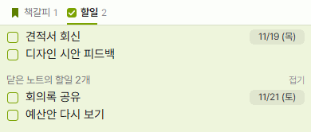
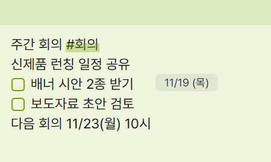

사용법
Tidy Notes는 툴바가 없습니다. 열자마자 쓰고, 기능은 /와 우클릭, 제목줄에서 그때그때 꺼냅니다.
쓰기·닫기
- 새 노트: Ctrl+Alt+N, 트레이 아이콘 더블클릭, 또는 노트 제목줄의 +. 첫 줄이 노트 제목이 됩니다.
- 저장은 따로 없습니다. 쓰는 대로 바로 저장됩니다.
- ×는 닫기입니다. 지워지지 않습니다. 노트함(Ctrl+Alt+F)이나 트레이 아이콘 우클릭 → 최근 닫은 노트에서 다시 엽니다.
- 지우기는 제목줄 ● → 휴지통으로. 노트함 휴지통에서 되살릴 수 있습니다.
/ 메뉴와 줄 처음 기호
빈 줄에서 /를 치면 명령 목록이 뜹니다. 자주 쓰는 것은 줄 맨 앞에 기호를 치고 스페이스를 눌러도 됩니다.
| 만들 것 | / 명령 | 줄 처음 + 스페이스 |
|---|---|---|
| 할일(체크박스) | /할일 | [] |
| 책갈피(보드에 늘 띄우기) | /책갈피 | ! |
| 날짜 | /날짜 | @ |
| 큰 글자 | /h1 /h2 /h3 | — |
| 글머리·번호 목록 | — | - · 1. |
| 파일 첨부 | /첨부 | — |
글자를 고른 뒤 우클릭하면 굵게·기울임·밑줄·형광펜·링크가 나옵니다.
할일

- 줄 맨 앞에 [] 스페이스, 또는
/할일. - 마감일은 할일 줄에서 우클릭 → 날짜 넣기, 또는
/날짜. 지난 날짜는 빨갛게, 오늘은 진하게 보입니다. - 모든 노트의 안 끝낸 할일은 책갈피 보드의 할일 탭에 날짜순으로 모입니다. 거기서 체크해도 노트에 그대로 반영됩니다.
책갈피 보드

- 줄 맨 앞에 ! 스페이스를 치면 그 줄이 바탕화면의 책갈피 보드에 늘 떠 있습니다. 회의실 번호, 마감일처럼 계속 봐야 하는 줄에 씁니다.
- 보드의 줄을 누르면 원래 노트의 그 자리로 갑니다.
- 닫은 노트의 책갈피는 보드에서 빠집니다. 할일은 맨 아래 닫은 노트의 할일 n개 한 줄로 모입니다. 펼치기로 보고, 줄을 누르면 그 노트가 다시 열립니다.
- 보드를 닫았으면 트레이 아이콘 우클릭 → 책갈피 보드로 다시 엽니다.
#태그와 노트함

- 본문 아무 데나
#회의처럼 쓰면 태그가 됩니다. #을 치면 쓰던 태그가 뜹니다. - 노트함(Ctrl+Alt+F)에서 모든 노트를 보고, 태그나 글자로 찾습니다. 닫아 둔 노트도 여기 다 있습니다.
붙여넣기와 파일 첨부

- 엑셀·웹의 표, 화면 캡처를 Ctrl+V로 그대로 붙입니다. 글자만 붙이려면 Ctrl+Shift+V.
- 복사해 둔 것을 바로 새 노트로: Ctrl+Alt+V.
- 파일을 노트에 끌어다 놓거나
/첨부. 내 Google Drive에 올라가고 노트에는 칩으로 남습니다(Google 계정 연결 필요).
창 다루기
| 하고 싶은 것 | 방법 |
|---|---|
| 진하기(투명도) | 제목줄 ● → 진하기 막대, 또는 제목줄 위에서 마우스 휠. 글을 쓰는 동안에도 고른 진하기 그대로입니다. |
| 접기(제목줄만 남기기) | 제목줄 더블클릭. 한 번 더 하면 펼칩니다. |
| 항상 위 | 제목줄에 마우스를 올리면 나오는 핀 |
| 색 | 제목줄 ● → 색 견본 |
| 흩어진 노트 정리 | ● → 노트 정리(가운데·왼쪽·오른쪽). 되돌리기도 됩니다. |
| 잠깐 다 치우기 | Ctrl+Alt+H (한 번 더 누르면 다시 보임) |
여러 PC에서 쓰기
설정에서 Google 계정을 연결하면 노트가 내 Drive의 TidyNotes 폴더에 저장되고, 다른 PC와 몇 분 안에 맞춰집니다. 화면에 어떻게 띄울지는 PC마다 따로 정합니다.
| 다른 PC와 맞춰지는 것 | 이 PC에만 저장되는 것 |
|---|---|
| 노트 내용(글·할일·책갈피·사진·첨부) | 창 위치·크기 |
| 노트 색 | 진하기 |
| 닫기(×): 한 PC에서 닫으면 다른 PC에서도 닫힘 | 접기·항상 위 |
| 휴지통으로 보낸 것 | 단축키·새 노트 기본값 |
닫은 노트를 다시 열면 다른 PC의 보드에도 책갈피·할일이 돌아옵니다. 다만 다른 PC 바탕화면에 창이 저절로 뜨지는 않습니다. 그 PC에서 보고 싶을 때 그 PC에서 엽니다.
단축키
| 어디서나 | 키 |
|---|---|
| 새 노트 | Ctrl+Alt+N |
| 클립보드로 새 노트 | Ctrl+Alt+V |
| 노트함 | Ctrl+Alt+F |
| 노트 보이기·숨기기 | Ctrl+Alt+H |
| 노트 안에서 | 키 |
|---|---|
| 굵게 · 기울임 · 밑줄 | Ctrl+B Ctrl+I Ctrl+U |
| 글자 작게 · 크게 | Ctrl+[ Ctrl+] |
| 링크 | Ctrl+K |
| 노트 안에서 찾기 | Ctrl+F |
| 글자만 붙여넣기 | Ctrl+Shift+V |
어디서나 쓰는 단축키는 설정에서 바꿀 수 있습니다.